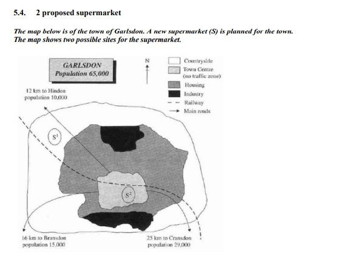
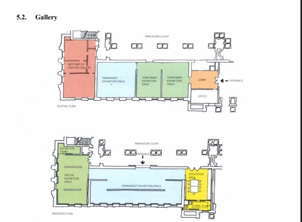

Speaking Practice Test
Three parts, one microphone: yours.
Part 1 · Fast Food
- What kinds of fast food have you tried? Why / why not?
- Do you ever use a microwave to cook food quickly? Why / why not?
- How popular are fast food restaurants where you live? Why / why not?
- When would you go to a fast-food restaurant? Why / why not?
Part 2 · Long Turn
You should say:
- when and where you got this technology
- why you started using this technology
- why you decided to stop using it
Write only 4 single trigger words down the margin, one per prompt. Never write sentences.
Past Context (30s) → Sensory Snapshot / Core Scene (45s) → Reflection, the 'So what?' (45s).
The bullet points are springboards, not a checklist. If you finish early, go deeper into your reflection and make comparisons until you are stopped.
Part 3 · Discussion
Computer games
- What kinds of computer games do people play in your country?
- Why do people enjoy playing computer games?
- Do you think that all computer games should have a minimum age for players?
Technology in the classroom
- In what ways can technology in the classroom be helpful?
- Do you agree that students are often better at using technology than their teachers?
- Do you believe that computers will ever replace human teachers?
Answer in four moves: A.R.E.A.
Maps · Describing Location

Inside or outside?
in = inside the area · to = outside it, in that direction
Position words
in the centreon the outskirtssurroundsadjacent tonext tooppositebetweenalongclose toa short distance from12 km fromon the main roadCompass
north · north-east · east · south-east · south · south-west · west · north-west
Maps · Describing Change

Passive for change
Size and newness
Comparison Language · Every Task 1 Type
Charts, tables, graphs, processes and maps: the same eight tools. Examples use your own export essay.
| Tool | Formula |
|---|---|
| Small difference | A + verb + slightly / marginally + comparative + than + B |
| Big difference | A + verb + considerably / far + comparative + than + B |
| Multiples | A + is + twice / three times + as + adjective + as + BA + earned + twice as much as + B |
| Superlative | the + highest / lowest / most + noun + of all the categories |
| Contrast, one sentence | A + verb, whereas / while + B + verb |
| Contrast, two sentences | A + verb. By contrast / In contrast, + B + verb. |
| Similarity | Both A and B + verb · Similarly, … · A was almost identical to B |
| Proportion | just over a quarter · nearly half · the vast majority · a mere 5% |
Your Turn · Garlsdon in Two Minutes
Look at the map again and write three sentences. Include one location phrase, one comparison and the word whereas.
Speaking Round 2 · Compare Out Loud
Ninety seconds each. Use the comparison tools from the last slide.
- Compare learning from a teacher with learning from an app.
- Compare computer games now with games ten years ago.
- Compare a fast-food meal with a home-cooked meal.
- Compare studying alone with studying in a group.
Proofread Race · Find the 6 Errors
Three minutes. Read from the last sentence back to the first.
Errors: agreement · then/than ×2 · opener with no subject · irregular past · plural spelling.
Numbers Check · Calculate Before You Write
Timed Task 1 · The Gallery · 20 Minutes
The first picture shows an art gallery as it is now; the second shows proposed changes. Summarise the information by selecting and reporting the main features, and make comparisons where relevant. Write at least 150 words.
Before you hand in
- Overview sentence: the biggest change
- At least 150 words (aim for 160)
- One passive, one twice as … as, one whereas
- Two-minute proofread: spelling, agreement, openers with a subject